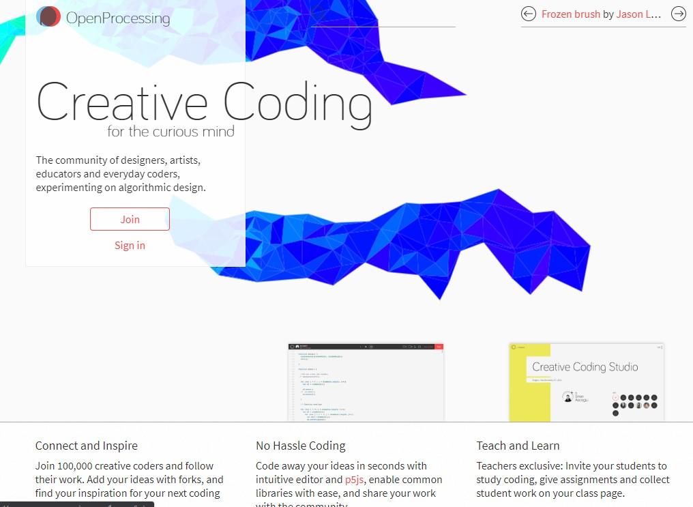
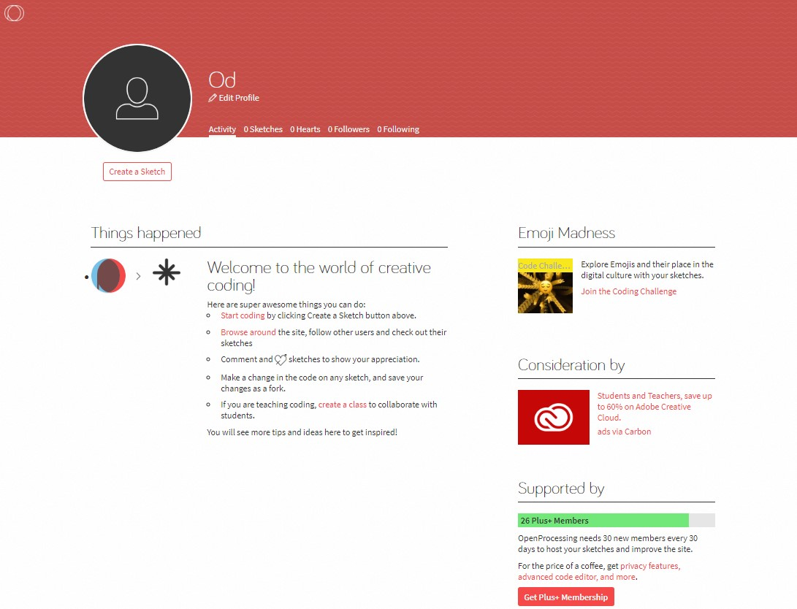
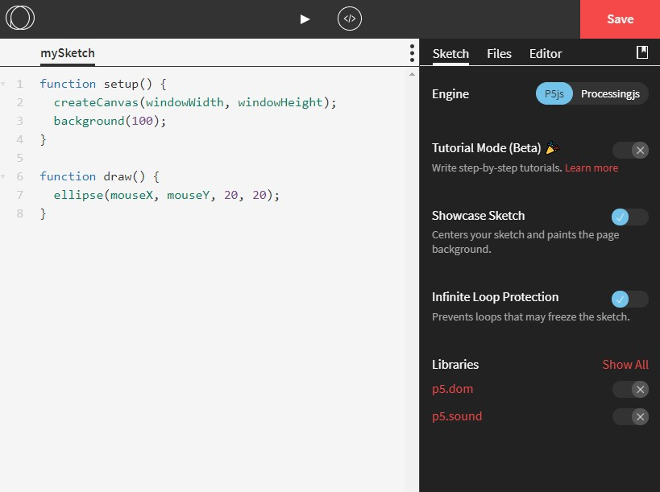

關於 OpenProcessing
OpenProcessing - Creative Coding for the Curious Mind.
- 類似 Codepen 的線上創作平台

使用者頁面
- 登入後就可以點左上頭像下方的 Create a Sketch 建立新的畫布

- 在頭像右方的選單分別是
- Activity 為 Following 跟隨中的創作者更新動態
- Sketches 個人作品列表
- Hearts 收藏作品
- Followers 被跟隨數量
- Following 跟隨數量
建立 Sketch 頁面
- 位在上方中間的三角形是執行，
</>是回到 mySketch 的 code 頁面

範例
1 | function setup() { |
對語法不熟悉時，可參考 p5.js 的 Reference 文件